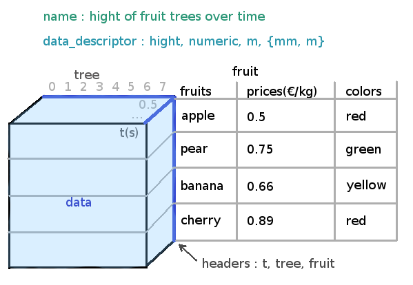

Overview¶
- Here is a quick presentation of the main elements of xplor:
- Window : the interface ;
- Xdata : the container of the data and metadata ;
- Filter : to display only a slice of the data.
window object¶
Window is the main interface. It is composed of a control zone, where the user can select the filters to apply, and a display zone, in which the user can zoom and change the labels’ position.
Screenshot of the Window with the control zone and the display zone

xdata object¶
Xdata is a container for the N dimensional data and all the relative metadata.
Example of a Xdata instance
filter object¶
Filters are selected in the interface and will update the xdata element : the resulting slice of data will be displayed.